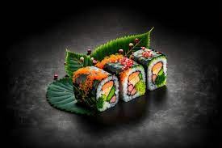

1. Container
Mon premier site dédié au restau japonais Des Sushi Man d'expérience vous feront découvrir une cuisine Japonaise typique. Vous pourrez déguster les classiques de la cuisine Japonaise à base de poisson extra frais : nos Sushi, Maki Sashimi et Chirashi sont préparés sur place à la demande. Les Yakitori boeuf-fromage,Yakitori au poulet ou aux boulettes de poulet sont fabriqués sur place dans la plus pure tradition. Nous vous proposons des spécialités de Gyoza et de Tempura. Nos chefs vous proposent également les nouilles Japonaises telles que les Yaki Soba, Ramen et Udon, qui vous feront voyager aux 4 coins du Japon. Tous nos plats sont disponibles sur place, à emporter ou en livraison.
2. Avatar

3. Button
SubmitNos Menus

Nigiri Sushi

Rolls

Maki Saumon